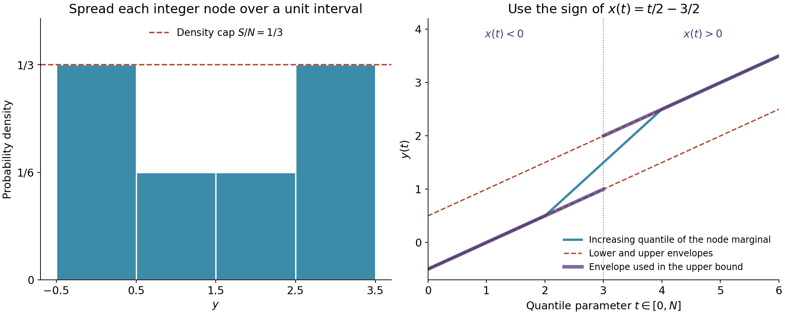

Two logarithms I: interpolation determinants
Draft. Public domain (CC0).
For two logarithms, one can build a determinant whose nonvanishing follows from a polynomial zero lemma. Its entries are algebraic, so height theory bounds it below. When the logarithmic form is small, its rows become nearly samples of functions of one variable; Taylor expansion then gives a large zero order and an analytic upper bound. Comparing the bounds produces a fully explicit parameter theorem.
We prove a parameter estimate by selecting a nonzero minor, bounding its arithmetic size, and exploiting its analytic zero order. We then prove Laurent's refined parameter theorem, with centered exponents and the entire exponential error series. The occupancy bound, the weighted arithmetic comparison and the group-size inequality are all proved here. The method is due to Laurent; the binomial-basis arithmetic refinement goes back to Feldman. The following lesson studies numerical choices of parameters.
We use the written Heights of algebraic numbers, Theorem 2.8, for polynomial Liouville inequalities, and the written Siegel's lemma, analytic estimates and the six exponentials theorem, Lemma 5.4, for Schwarz's estimate with multiplicity. Their precise statements are recalled below. The earlier written Gelfond–Schneider and Hilbert's seventh problem lesson in that course gives qualitative context for interpolation determinants; none of its conclusions is used as a quantitative bound here.
1. The setting and the reductions
Let \(\alpha_1,\alpha_2\ne0\) be algebraic, with chosen logarithms \(\ell_j\), and set \[ D=[\mathbb Q(\alpha_1,\alpha_2):\mathbb Q]. \] In this lesson \(h(\alpha)\) denotes the absolute logarithmic Weil height, not the integer parameter of the preceding proof. We work in the cancellation setting \[ \Lambda=b_2\ell_2-b_1\ell_1,\qquad b_1,b_2\in\mathbb Z_{>0}, \qquad |\alpha_1|,|\alpha_2|\ge1, \] and order the indices so that \[ b_1|\ell_1|\le b_2|\ell_2|. \tag{6.1} \] Swapping the indices replaces \(\Lambda\) by its negative, preserving its absolute value. This direction of (6.1) is used explicitly in the analytic proof.
Here is why this setting captures the difficult case of a general two-term form \(\Gamma=c_1\ell_1+c_2\ell_2\), with nonzero integer coefficients. Replacing a base by its inverse must also replace its logarithm by its negative and reverse its coefficient; height and degree are preserved. First invert any bases of modulus less than one. If the resulting two coefficients have opposite signs, we obtain the displayed cancellation form up to an overall sign. If their signs agree and some base has modulus greater than one, the real parts add, so no close cancellation is possible. More precisely, for such a base \(\alpha\), \[ |\Gamma|\ge\log|\alpha| \ge\frac14\exp\{-D^2(2h(\alpha)+\log2)\}. \tag{6.2} \] To prove the last bound, apply the one-place Liouville inequality to \(\alpha\overline\alpha-1\ne0\), in a field of degree at most \(D^2\), with height at most \(2h(\alpha)+\log2\). For \(0<u\le1\), \(\tfrac12\log(1+u)\ge u/4\); for \(u>1\), it is at least \(\log2/2>1/4\). Take \(u=|\alpha|^2-1\). If both moduli are one, inverting either base preserves that condition and permits opposite coefficient signs. Thus the omitted case has the direct effective lower bound (6.2); the next lesson compares it with the final numerical estimate.
When reversing a branch, use exactly \(-\ell_j\), which is a logarithm of \(\alpha_j^{-1}\). Resetting it independently to a principal branch could change the form by a period and would not be a valid reduction.
2. Selecting a generalized Vandermonde minor
Lemma 6.1. Let \(0\le e_1<\cdots<e_q<L\) be integers, and let \(E\) be a set of at least \(L\) distinct complex numbers. There are \(y_1,\ldots,y_q\in E\) such that \[ \det(y_j^{e_i})_{1\le i,j\le q}\ne0. \tag{6.3} \] Use \(0^0=1\).
Proof. For \(q=1\), the nonzero polynomial \(X^{e_1}\) cannot vanish on at least \(L>e_1\) distinct points. Induct on \(q\). Choose \(q-1\) columns giving a nonzero minor for exponents \(e_1,\ldots,e_{q-1}\). Appending a variable column \(z^{e_i}\) gives a polynomial \(F(z)\) of degree exactly \(e_q\), whose leading coefficient is that nonzero minor. It cannot vanish at every point of \(E\). Choose \(y_q\) with \(F(y_q)\ne0\); it is automatically distinct from the previously chosen nodes, where two columns would coincide. \(\square\)
This lemma does not say that every choice of \(q\) nodes works. For example, even exponents cannot distinguish a chosen pair \(y,-y\). It says that sufficiently many available distinct values contain a good choice.
3. The zero lemma
Lemma 6.2. Let \(\alpha_1,\alpha_2\ne0\) and \(b_1,b_2\) be complex numbers. Let \(K,L\ge1\), and let \(E,E'\) be finite subsets of \(\mathbb Z^2\). Suppose \[ \#\{\alpha_1^r\alpha_2^s:(r,s)\in E\}\ge L,\qquad \#\{b_2r'+b_1s':(r',s')\in E'\}>(K-1)L. \tag{6.4} \] For any nonzero \(P\in\mathbb C[X,Y]\) with \(\deg_XP\le K-1,\ \deg_YP\le L-1\), at least one value \[ P\!\left(b_2(r+r')+b_1(s+s'), \alpha_1^{r+r'}\alpha_2^{s+s'}\right), \quad (r,s)\in E,\ (r',s')\in E', \tag{6.5} \] is nonzero.
Proof. All the second coordinates in (6.5) are nonzero, so divide \(P\) by its largest common power of \(Y\) without affecting a proposed vanishing. Write the resulting polynomial as \[ P(X,Y)=\sum_{i=1}^q Q_i(X)Y^{e_i}, \quad 0=e_1<\cdots<e_q<L,\quad Q_i\ne0. \] By the first condition in (6.4) and Lemma 6.1, choose \(q\) points \((r_j,s_j)\in E\) such that, with \[ x_j=b_2r_j+b_1s_j,\qquad y_j=\alpha_1^{r_j}\alpha_2^{s_j}, \] the determinant \(B_0=\det(y_j^{e_i})\) is nonzero.
Translate and scale the original polynomial: \[ P_j(X,Y)=P(X+x_j,y_jY) =\sum_i Q_i(X+x_j)y_j^{e_i}Y^{e_i}. \] The coefficient matrix has determinant \[ F(X)=\det(Q_i(X+x_j)y_j^{e_i})_{i,j}. \] If \(Q_i(X)=q_iX^{m_i}+\cdots\), its highest term is \[ F(X)=\left(\prod_iq_i\right)B_0X^{m_1+\cdots+m_q}+\cdots. \] Thus \(F\ne0\) and \(\deg F=\sum_i m_i\le q(K-1)\le L(K-1)\).
The adjugate identity for the coefficient matrix gives polynomials \(S_j(X)\) such that \[ F(X)Y^{e_1}=\sum_j S_j(X)P_j(X,Y). \] Since \(e_1=0\), the left side is \(F(X)\). If all (6.5) vanished, evaluating this identity at \[ X=b_2r'+b_1s',\qquad Y=\alpha_1^{r'}\alpha_2^{s'} \] would make \(F(X)=0\) for every \((r',s')\in E'\). The second condition in (6.4) gives more distinct roots than its degree, a contradiction. \(\square\)
The polynomial coefficients here may be complex; integrality is neither assumed nor needed. This matters when the lemma is used to rule out a complex linear dependence among rows.
4. The exact analytic and height inputs
For an entire function \(\Psi\), write \(|\Psi|_R=\max_{|z|=R}|\Psi(z)|\). The written internal Schwarz lemma states that a zero of order at least \(T\) at the origin gives \[ |\Psi|_r\le(r/R)^T|\Psi|_R\qquad(0<r\le R). \tag{6.6} \] Its proof divides by \(z^T\) and applies maximum modulus; the quotient extends analytically at zero. We will supply the large zero order for the determinant, then apply (6.6) with \(r=1\).
For \(P\in\mathbb Z[X,Y]\), let \(\mathcal L(P)\) be the sum of its absolute coefficients. The written polynomial Liouville inequality gives, whenever \(P(\alpha_1,\alpha_2)\ne0\), \[ \log|P(\alpha_1,\alpha_2)| \ge-D\{\log\mathcal L(P)+(\deg_XP)h(\alpha_1) +(\deg_YP)h(\alpha_2)\}. \tag{6.7} \] At a complex place the local weight can be two; (6.7) is the weaker unweighted embedding bound, valid at both real and complex embeddings. The full weighted statement is Theorem 2.8 in the internal height lesson.
5. The parameter theorem
Theorem 6.3 (a two-logarithm determinant estimate). In the setting of Section 1, take integers \(K\ge3\) and \(L,R_1,R_2,S_1,S_2\ge2\). Put \[ N=KL,\quad R=R_1+R_2-1,\quad S=S_1+S_2-1. \] Suppose \[ \#\{\alpha_1^r\alpha_2^s:0\le r<R_1,\ 0\le s<S_1\}\ge L, \tag{6.8} \] \[ \#\{rb_2+sb_1:0\le r<R_2,\ 0\le s<S_2\}>(K-1)L. \tag{6.9} \] Define the positive real number \[ b=\bigl((R-1)b_2+(S-1)b_1\bigr) \left(\prod_{j=1}^{K-1}j!\right)^{-2/(K^2-K)}. \tag{6.10} \] If \(\rho>1\) satisfies \[ \begin{aligned} (N-K)\log\rho>{}&2(D+1)\log N+(D+1)K\log b\\ &+2LR\{\rho|\ell_1|+Dh(\alpha_1)\}\\ &+2LS\{\rho|\ell_2|+Dh(\alpha_2)\}, \end{aligned} \tag{6.11} \] then \[ |\Lambda|\max\left\{ \frac{LR}{b_1}e^{|\Lambda|LR/b_1}, \frac{LS}{b_2}e^{|\Lambda|LS/b_2} \right\}>\rho^{-N}. \tag{6.12} \]
We first note \(b\ge L\ge2\). The integer values in (6.9) lie between \(0\) and \((R_2-1)b_2+(S_2-1)b_1\), so that endpoint is at least \((K-1)L\). Meanwhile \[ \prod_{j=1}^{K-1}j!\le(K-1)^{K(K-1)/2}. \] The endpoint in (6.10) is larger still, proving the assertion. In particular \(\log b>0\), which permits the later harmless relaxation of a coefficient.
6. Constructing a nonzero minor
Form a matrix with rows \((k,\ell)\), \(0\le k<K,\ 0\le\ell<L\), and columns \((r,s)\), \(0\le r<R,\ 0\le s<S\), whose entries are \[ \binom{rb_2+sb_1}{k}\alpha_1^{\ell r}\alpha_2^{\ell s}. \tag{6.13} \] The binomial coefficient is an integer, including zero when its nonnegative upper argument is less than \(k\).
The matrix has row rank \(N\). Otherwise a nonzero complex linear combination of rows would give \[ P(X,Y)=\sum_{k,\ell}c_{k,\ell}\binom Xk Y^\ell \] vanishing at all the columns. This polynomial is nonzero because the binomial polynomials form a triangular basis in \(X\). Its bidegrees are at most \((K-1,L-1)\). Apply Lemma 6.2 to the two rectangles appearing in (6.8)–(6.9). Their sums lie inside the column rectangle, so the proposed vanishing contradicts the lemma.
Choose a nonzero \(N\)-column minor \(\Delta\), indexed by \((r_j,s_j)\). Index its rows by \((k_i,\tau_i)\), so each \(k=0,\ldots,K-1\) occurs \(L\) times. For every permutation \(\sigma\), \[ \sum_i\tau_i r_{\sigma(i)}\le LRN,\qquad \sum_i\tau_i s_{\sigma(i)}\le LSN,\qquad \sum_i k_i=(K-1)N/2. \tag{6.14} \] The coarse degree bounds are sufficient for the parameter theorem.
7. The arithmetic lower bound
Expanding the determinant gives an integer polynomial \(P(X,Y)\) with \(\Delta=P(\alpha_1,\alpha_2)\ne0\). Put \(W=(R-1)b_2+(S-1)b_1\). Since \(\binom tk\le t^k/k!\) for every nonnegative integer \(t\), \[ \mathcal L(P)\le N!\frac{W^{(K-1)N/2}}{\prod_i k_i!} =N!b^{(K-1)N/2} \le N^N b^{(K-1)N/2}. \tag{6.15} \] For \(t=k=0\), use the convention \(0^0=1\). By (6.14), its degrees are at most \(LRN,LSN\). The exact internal inequality (6.7) therefore gives \[ \log|\Delta|\ge -DN\log N-\frac{D(K-1)N}{2}\log b -DLN\{Rh(\alpha_1)+Sh(\alpha_2)\}. \tag{6.16} \] The factorial product in (6.15) is the benefit of the binomial basis. Integral powers would omit it and produce a worse coefficient parameter.
8. A one-variable determinant with many zeros
Put \(\beta=b_1/b_2\), and define \[ z_j=r_j+\beta s_j,\qquad \varphi_i(z)=\frac{b_2^{k_i}}{k_i!}z^{k_i}e^{\tau_i\ell_1z}. \] The integer \(\tau_i\) is the row's second index; \(\ell_1\) remains the chosen logarithm.
Within each fixed row index \(\ell\), replacing \(\binom{rb_2+sb_1}{k}\) by its leading monomial \((rb_2+sb_1)^k/k!\) is a triangular row operation of determinant one. Since \(\ell_2=\beta\ell_1+\Lambda/b_2\), the minor becomes \[ \Delta=\det\left(\varphi_i(z_j)e^{\tau_i s_j\Lambda/b_2}\right). \] Define \[ \Lambda_*=\Lambda\max\left\{ \frac{LR}{b_1}e^{|\Lambda|LR/b_1}, \frac{LS}{b_2}e^{|\Lambda|LS/b_2}\right\}. \] When \(\Lambda\ne0\), write \[ e^{\tau_i s_j\Lambda/b_2}=1+\Lambda_*\theta_{ij}, \qquad |\theta_{ij}|\le1. \tag{6.17} \] Indeed, \(|e^u-1|\le |u|e^{|u|}\) and \(0\le\tau_i s_j<LS\) give this bound using the second term of the maximum. If \(\Lambda=0\), take \(\Lambda_*=0,\theta_{ij}=0\); the identity remains valid.
Expand the determinant by rows. For a subset \(I\subseteq\{1,\ldots,N\}\), let \[ \Phi_I(x)=\det(A^I_{ij}(x))_{i,j=1}^N, \] where \[ A^I_{ij}(x)= \begin{cases} \varphi_i(xz_j),&i\in I,\\ \theta_{ij}\varphi_i(xz_j),&i\notin I. \end{cases} \] This notation describes the entry in row \(i\), column \(j\), rather than a determinant of scalar alternatives. Then \[ \Delta=\sum_I\Lambda_*^{N-|I|}\Phi_I(1). \tag{6.18} \] At \(\Lambda_*=0\), the term with exponent zero is read with \(0^0=1\).
If \(m=|I|\), the entire function \(\Phi_I\) has a zero of order at least \(m(m-1)/2\) at \(x=0\). Expand only its \(I\)-rows in their convergent Taylor series: \[ \varphi_i(xz_j)=\sum_{v\ge0}c_{i,v}x^v z_j^v. \] A term with the same exponent \(v\) in two of those rows has two identical row vectors and vanishes. A surviving term therefore has \(m\) distinct nonnegative exponents, with sum at least \(0+1+\cdots+(m-1)\). The other rows are analytic and cannot lower the zero order. Schwarz's estimate (6.6) gives \[ |\Phi_I(1)|\le\rho^{-m(m-1)/2}\max_{|x|=\rho}|\Phi_I(x)|. \tag{6.19} \] This is the full determinant zero-order argument.
9. The analytic upper bound and the contradiction
For \(|x|=\rho\), expand \(\Phi_I\) by permutations and use \(|\theta_{ij}|\le1\). The nonnegative nodes satisfy \(b_2z_j\le W\), giving the polynomial factor \[ \frac{(\rho W)^{\sum_i k_i}}{\prod_i k_i!} =(\rho b)^{(K-1)N/2}. \] The exponential part is bounded by \[ \exp\left\{\rho|\ell_1|\sum_i\tau_i(r_{\sigma(i)}+\beta s_{\sigma(i)})\right\} \le \exp\{\rho LN(R|\ell_1|+S|\ell_2|)\}. \tag{6.20} \] For the second contribution, we used precisely \(\beta|\ell_1|\le|\ell_2|\), which follows from (6.1). Hence \[ \max_{|x|=\rho}|\Phi_I(x)| \le N!(\rho b)^{(K-1)N/2} e^{\rho LN(R|\ell_1|+S|\ell_2|)}. \tag{6.21} \]
Suppose \(|\Lambda_*|\le\rho^{-N}\). Equations (6.18)–(6.19) give \[ |\Delta|\le2^N\rho^{-N(N-1)/2}\max_I\max_{|x|=\rho}|\Phi_I(x)|, \] because \[ N(N-m)+m(m-1)/2\ge N(N-1)/2\quad(0\le m\le N). \] Also \(2^NN!\le N^N\) for \(N\ge6\). At \(N=6\) this is \(46080\le46656\); the ratio \(N^N/(2^NN!)\) increases, since its successive ratio is \((1+1/N)^N/2\ge1\).
Combining with (6.21) and using \(N=KL\ge6\), we obtain \[ \log|\Delta|\le -\frac{N(N-K)}2\log\rho+N\log N +\frac{KN}{2}\log b +\rho LN(R|\ell_1|+S|\ell_2|). \tag{6.22} \] We replaced \(K-1\) by \(K\) only in the coefficient of \(\log b>0\); this deliberately weakens the estimate.
Comparing (6.16) and (6.22), and multiplying by \(2/N\), forces \[ \begin{aligned} (N-K)\log\rho\le{}& 2(D+1)\log N+\{K+D(K-1)\}\log b\\ &+2LR\{\rho|\ell_1|+Dh(\alpha_1)\}\\ &+2LS\{\rho|\ell_2|+Dh(\alpha_2)\}. \end{aligned} \] Since \(K+D(K-1)\le(D+1)K\), this contradicts (6.11). Thus \(|\Lambda_*|>\rho^{-N}\), exactly (6.12). The proof also excludes \(\Lambda=0\) whenever all the parameter hypotheses hold. \(\square\)
10. A numerical parameter certificate
Take \(\alpha_1=2,\alpha_2=3\), their real logarithms, and \[ b_1=176251,\qquad b_2=111202,\qquad \rho=2. \] Here \(D=1,\ h(2)=\log2,\ h(3)=\log3\). Rational series bounds below certify \[ 3.600\times10^{-6}<111202\log3-176251\log2<3.601\times10^{-6}, \] so (6.1) holds and the form is small. Choose \[ L=500,\quad K=500000,\quad R_1=S_1=500,\quad R_2=S_2=16000. \] Then \(N=250000000\) and \(R=S=16499\).
Unique prime factorization makes all \(2^r3^s\) distinct, so (6.8) holds. The additive map on the second rectangle in (6.9) is also injective: equality of two values implies \[ 111202(r-r')=-176251(s-s'). \] Coprimality forces \(r-r'\) to be a multiple of \(176251\) and \(s-s'\) a multiple of \(111202\). Their magnitudes are below \(16000\), so both are zero. Its cardinality is \(16000^2=256000000>(K-1)L=249999500\).
To check (6.11), no large determinant or factorial product needs evaluation. Since \[ W=16498(287453)=4742399594<2^{33}, \] we have \(\log b\le\log W<33\log2<23.1\). Also \(N<2^{28}\), so \(4\log N<78.4\). Using \[ 0.69<\log2<0.7,\qquad 1<\log3<1.1, \] the left side of (6.11) is greater than \(172155000\), while its right side is less than \[ 78.4+23100000+6(500)(16499)(1.8) =112194678.4. \] There is a margin exceeding \(59\) million.
These logarithm bounds can be checked with rational arithmetic from \[ \log x=2\sum_{j=0}^{m}\frac{t^{2j+1}}{2j+1} +\mathcal R_m,\qquad 0<\mathcal R_m\le\frac{2t^{2m+3}}{(2m+3)(1-t^2)}, \quad t=\frac{x-1}{x+1}. \] Use \(m=2\) for the coarse bound on \(\log2\) and \(m=3\) for the coarse bound on \(\log3\). Using \(m=30\) for both gives the stated narrow interval for \(\Lambda\), with its sign certified. The reproducible exact-arithmetic certificate checks all these inequalities with rational numbers. Its lower bound \(2^{-250000000}\) for \(|\Lambda_*|\) is intentionally weak; the next lesson optimizes the choice.
In general, if either base is not a root of unity, (6.8) holds with \(R_1=S_1=L\), by fixing the other exponent to zero. In the regime where the second rectangle has few collisions, its cardinality is of product size \(R_2S_2\). The analytic right side is only linear in \(R_2,S_2\), suggesting choices of order \[ R_2\asymp\rho DL\log A_2,\quad S_2\asymp\rho DL\log A_1,\quad K\asymp\rho^2D^2L\log A_1\log A_2. \] These are parameter-design guides, not replacements for checking the exact inequalities (6.8)–(6.11).
11. Centering the exponents: the occupancy bound
The arithmetic and analytic estimates improve together when the row exponents are centered. A selected column rectangle has a useful restriction: a given first coordinate occurs at most \(S\) times, and a given second coordinate at most \(R\) times. The following lemma converts this restriction into a bound for every determinant term.
Lemma 6.4 (centered occupancy). Let \(K,L,R,S\) be positive integers, \(N=KL\le RS\). Suppose \(\tau_1,\ldots,\tau_N\) contain each integer \(0,\ldots,L-1\) exactly \(K\) times. Suppose \(r_1,\ldots,r_N\) lie in \(\{0,\ldots,R-1\}\), with each value occurring at most \(S\) times. Define \[ g=\frac14-\frac{N}{12RS},\qquad G_1=\frac{gLRN}{2},\qquad M_1=\frac{L-1}{2}\sum_jr_j. \tag{6.23} \] Then, for every permutation \(\pi\), \[ \left|\sum_i\tau_i r_{\pi(i)}-M_1\right|\le G_1. \tag{6.24} \] For second coordinates \(s_j\in\{0,\ldots,S-1\}\), each repeated at most \(R\) times, the same assertion holds with \[ G_2=\frac{gLSN}{2},\qquad M_2=\frac{L-1}{2}\sum_js_j. \tag{6.25} \]
Proof. A permutation preserves the repetition restriction, so relabel it away. Choose \(i\) uniformly from the \(N\) indices and choose independent uniform random variables \(\xi,\zeta\) on \([-1/2,1/2]\), also independent of \(i\). Put \[ X=\tau_i-\frac{L-1}{2}+\xi,\qquad Y=r_i+\zeta. \] The distribution of \(X\) is uniform on \([-L/2,L/2]\). The distribution of \(Y\) is supported on \([-1/2,R-1/2]\) and has density at most \(S/N\). Independence and zero means give \[ N\mathbb E[XY]=\sum_i\left(\tau_i-\frac{L-1}{2}\right)r_i. \tag{6.26} \]
For fixed bounded marginal distributions, the largest possible \(\mathbb E[XY]\) occurs when the two increasing quantiles are coupled. Here is a direct proof of the required rearrangement inequality. Shift both variables to make them nonnegative. The layer-cake formula and the elementary bound on an intersection give \[ \mathbb E[XY]=\int\!\!\int\mathbb P(X>u,Y>v)\,du\,dv \le\int\!\!\int\min\{\mathbb P(X>u),\mathbb P(Y>v)\}\,du\,dv. \] Coupling increasing quantiles makes both events terminal intervals of the same uniform variable, so their intersection has exactly the smaller probability. Undoing the shifts adds terms determined only by the marginal means. This proves the inequality also for signed variables.
Use a quantile parameter \(0<t<N\). The increasing quantile of \(X\) is \(t/K-L/2\). Write the increasing quantile of \(Y\) as \(y(t)\). Its density bound implies \[ -\frac12+\frac tS\le y(t) \le R-\frac12-\frac{N-t}{S}. \tag{6.27} \] Indeed, the mass in any interval is at most its length times \(S/N\); apply this to the intervals below and above the quantile. On \(t<N/2\), the quantile of \(X\) is negative, so use the lower bound for \(y(t)\). On \(t>N/2\), use its upper bound. Equations (6.26)–(6.27) and rearrangement yield \[ \begin{aligned} \sum_i\left(\tau_i-\frac{L-1}{2}\right)r_i \le{}&\int_0^{N/2}\left(\frac tK-\frac L2\right) \left(-\frac12+\frac tS\right)dt\\ &+\int_{N/2}^{N}\left(\frac tK-\frac L2\right) \left(R-\frac12-\frac{N-t}{S}\right)dt\\ ={}&\frac{NLR}{8}-\frac{N^2L}{24S}=G_1. \end{aligned} \tag{6.28} \] For the lower bound replace every \(r_i\) by \(R-1-r_i\). The repetition restriction persists, and the centered sum changes sign because \(\sum_i(\tau_i-(L-1)/2)=0\). Interchanging \(R,S\) proves (6.25). \(\square\)
Notice that \(1/6\le g<1/4\). The correction \(N/(12RS)\) comes from the finite occupancy capacity; ignoring it loses information. The argument applies without parity assumptions or an error from rounding.
Example. Take \(K=2,L=3,R=4,S=2\). Then \(N=6\), \(g=3/16\), and \(G_1=27/4\). For \[ (\tau_i)=(0,0,1,1,2,2),\qquad (r_i)=(0,0,1,2,3,3), \] the centered sum is \(6\), below \(27/4\). In the proof, the lower quantile envelope is \(-1/2+t/2\) and the upper envelope is \(1/2+t/2\). The sign change of \(t/2-3/2\) at \(t=3\) determines which envelope to use.

Figure 6.1. The node list \((0,0,1,2,3,3)\) gives the density on the left, bounded by \(S/N=1/3\). On the right, the increasing quantile lies between the two envelopes in (6.27). The upper-bound integral uses the lower envelope for negative \(x(t)\) and the upper envelope for positive \(x(t)\); the selected envelope is a pointwise bound, not the quantile of a proposed new distribution. The two integrals in (6.28) sum to \(27/4\). This illustrates the proof of Lemma 6.4.
12. A sharper arithmetic lower bound
Return to the nonzero minor of Section 6. Write \[ p=\frac{(K-1)N}{2},\qquad \widehat b=\frac W2\left(\prod_{k=1}^{K-1}k!\right)^{-2/(K(K-1))} =\frac b2. \tag{6.29} \] We retain \(D=[\mathbb Q(\alpha_1,\alpha_2):\mathbb Q]\) and distinguish the degree adjusted for the specified embedding: \[ \delta=[\mathbb R(\alpha_1,\alpha_2):\mathbb R]\in\{1,2\}, \qquad d=\frac D\delta. \tag{6.30} \] Thus \(\delta=1\) when both bases are real and \(\delta=2\) otherwise. Complex choices of logarithms of real bases do not change \(\delta\).
Lemma 6.5 (centered arithmetic estimate). For \(K\ge2,L\ge1\), a nonzero minor selected from distinct points of the \(R\)-by-\(S\) rectangle satisfies \[ \begin{aligned} \log|\Delta|\ge{}&-\frac{d-1}{2}N\log N -\frac{d-1}{2}(K-1)N\log\widehat b\\ &+(M_1+G_1)\log|\alpha_1|+(M_2+G_2)\log|\alpha_2|\\ &-2dG_1h(\alpha_1)-2dG_2h(\alpha_2). \end{aligned} \tag{6.31} \] Here the bases have modulus at least one, and \(M_j,G_j\) are given by (6.23), (6.25).
Proof. The determinant is the value of an integer polynomial \(P(X,Y)\). Its monomials have exponents \[ a=\sum_i\tau_i r_{\pi(i)},\qquad c=\sum_i\tau_i s_{\pi(i)}. \] Distinct selected columns give the repetition capacities required by Lemma 6.4. Consequently every monomial in \(P\), including after collecting terms, has \[ M_1-G_1\le a\le M_1+G_1,\qquad M_2-G_2\le c\le M_2+G_2. \tag{6.32} \]
We also have the unit-torus bound \[ \max_{|X|=|Y|=1}|P(X,Y)|\le N^{N/2}\widehat b^p=:B_0. \tag{6.33} \] To prove it, within each fixed second row index replace \(\binom{t}{k}\) by \((t-W/2)^k/k!\). These two polynomial bases have the same leading coefficients; their triangular change-of-basis matrix has diagonal entries one. The determinant is unchanged. Since \(0\le t=rb_2+sb_1\le W\), the Euclidean norm of row \((k,\tau)\) on the unit torus is at most \(\sqrt N(W/2)^k/k!\). Hadamard's inequality, multiplied over the rows, proves (6.33), because \(\prod_i k_i!=\bigl(\prod_{k=1}^{K-1}k!\bigr)^L\).
The following consequence of maximum modulus keeps both ends of the exponent interval. For any nonzero complex \(x,y\), \[ |P(x,y)|\le B_0|x|^{M_1}|y|^{M_2} \exp\{G_1|\log|x||+G_2|\log|y||\}. \tag{6.34} \] For one variable, let \(a_-\) and \(a_+\) be the smallest and largest actual integer exponents in the polynomial. Factoring out the smallest power and applying maximum modulus inside the unit disc gives the factor \(|x|^{a_-}\) when \(|x|\le1\). Applying the same argument to the reciprocal polynomial gives \(|x|^{a_+}\) when \(|x|\ge1\). Apply this successively in the two variables. The inequalities \(a_-\ge M_1-G_1\), \(a_+\le M_1+G_1\) and their second-variable counterparts give (6.34). No fractional power is being introduced into the algebraic polynomial.
Use the place normalization of Heights of algebraic numbers, Section 3 and Definition 2.3. If \(n_v\) is the local degree, its product formula and height definition give \[ \sum_vn_v\log|\gamma|_v=0,\qquad \sum_vn_v|\log|\gamma|_v|=2Dh(\gamma) \quad(\gamma\ne0). \tag{6.35} \] The second identity follows by splitting a real number into positive and negative parts and using the first identity. Also \(\sum_{v\mid\infty}n_v=D\). The product formula has its exact prerequisite home in Places of number fields in extensions and the product formula, Theorem 5.2; the height lesson states its normalization explicitly.
At an infinite place, apply (6.34) to the embedded bases. At a finite place, integer coefficients have modulus at most one; the ultrametric inequality and (6.32) give the same bound without the factor \(B_0\). Let \(v_0\) be the specified infinite place, with weight \(\delta\). Applying the product formula to the nonzero algebraic number \(\Delta\) and bounding all other places gives \[ \begin{aligned} \delta\log|\Delta|\ge{}&-(D-\delta)\log B_0 +\delta\sum_{j=1}^{2}(M_j+G_j)\log|\alpha_j|\\ &-2D\sum_{j=1}^{2}G_jh(\alpha_j). \end{aligned} \tag{6.36} \] The centered terms use \(\sum_{v\ne v_0}n_v\log|\alpha_j|_v=-\delta\log|\alpha_j|\). The absolute-logarithm terms use (6.35) and \(\log|\alpha_j|\ge0\) at \(v_0\). Divide by \(\delta\) and insert (6.33). This is (6.31). \(\square\)
Two gains are visible. Centering replaces \(b\) by \(\widehat b=b/2\); the unit-torus estimate then charges its coefficient factor only at the other infinite places. The term \((d-1)\log B_0\) can vanish, for example for rational real bases. No sign assumption on \(\log\widehat b\) was used.
13. Keeping the whole error series
The row expansion of Section 8 treats every exponential error in one step. Laurent's refinement retains its entire series. Equal error orders then force equal Taylor orders to give proportional rows, producing a zero-order estimate for each group.
Lemma 6.6 (the group-size inequality). For positive integers \(\nu_1,\ldots,\nu_q\) with sum \(N\), and \(1/3\le\mu\le1\), set \(\sigma=(1+2\mu-\mu^2)/2\). Then \[ \sum_{k=1}^{q}\binom{\nu_k}{2} +\mu N\sum_{k=1}^{q}(k-1)\nu_k \ge\frac{\sigma N^2-N}{2}. \tag{6.37} \]
Proof. On the simplex \(x_k\ge0,\sum x_k=1\), minimize \[ F(x)=\frac12\sum_kx_k^2+\mu\sum_k(k-1)x_k. \] A minimum exists by compactness. Permuting two coordinates shows that at a minimum they are nonincreasing; the quadratic part is unchanged, while pairing the larger coordinate with the smaller coefficient lowers the linear part. For any positive coordinate \(x_k\), transfer a small signed amount between \(x_1\) and \(x_k\). Vanishing of the derivative gives \(x_k=x_1-(k-1)\mu\). If there are \(m\) positive coordinates, they therefore have values \[ x_k=\frac1m+\left(\frac{m+1}{2}-k\right)\mu, \qquad 1\le k\le m. \] If \(m\ge2\), positivity of the last implies \(\mu<2/(m(m-1))\). Since \(\mu\ge1/3\), we have \(m\le2\). For \(m=1\), the minimum value is \(1/2\ge\sigma/2\). For \(m=2\), the coordinates are \(((1+\mu)/2,(1-\mu)/2)\), and substitution gives \(F=\sigma/2\). This also covers the endpoints by the appropriate zero coordinates. Finally put \(x_k=\nu_k/N\), multiply by \(N^2\), and subtract \(N/2\) to convert \(\nu_k^2/2\) to \(\binom{\nu_k}{2}\). \(\square\)
Lemma 6.7 (full-series analytic estimate). In the ordered setting (6.1), define \[ \Lambda'=\Lambda\max\left\{ \frac{LS}{2b_2}e^{LS|\Lambda|/(2b_2)}, \frac{LR}{2b_1}e^{LR|\Lambda|/(2b_1)}\right\}. \tag{6.38} \] If \(\rho>1\), \(1/3\le\mu\le1\), and \(|\Lambda'|\le\rho^{-\mu N}\), then \[ \begin{aligned} |\Delta|\le{}&|\alpha_1|^{M_1}|\alpha_2|^{M_2} \rho^{-(\sigma N^2-N)/2}N\{e^N+(e-1)^N\}\\ &\cdot N!(\rho\widehat b)^p \exp\{\rho(G_1|\ell_1|+G_2|\ell_2|)\}. \end{aligned} \tag{6.39} \]
Proof. Put \[ \beta=b_1/b_2,\quad \eta=\frac{R-1+\beta(S-1)}2,\quad z_j=r_j+\beta s_j-\eta,\quad \lambda_i=\tau_i-\frac{L-1}{2}. \] The triangular row change used for (6.33) centers the additive nodes. Factoring \(e^{(L-1)(r_j\ell_1+s_j\ell_2)/2}\) from each column centers the row exponent. Since \(\ell_2=\beta\ell_1+\Lambda/b_2\) and \(\sum_i\lambda_i=0\), the resulting identity is \[ \Delta=e^{M_1\ell_1+M_2\ell_2} \det\left(\varphi_i(z_j)e^{\lambda_i s_j\Lambda/b_2}\right), \quad \varphi_i(z)=\frac{b_2^{k_i}}{k_i!}z^{k_i}e^{\lambda_i\ell_1z}. \tag{6.40} \] All exponentials use the specified branches. The displayed factorization is analytic; it does not enlarge the algebraic field or change its degree.
Expand each exponential in (6.40). Multilinearity gives \[ e^{-M_1\ell_1-M_2\ell_2}\Delta =\sum_{n\in\mathbb Z_{\ge0}^{N}}\Delta_n, \quad \Delta_n=\det\left(\varphi_i(z_j) \frac{(\lambda_i s_j\Lambda/b_2)^{n_i}}{n_i!}\right). \tag{6.41} \] This series is absolutely convergent: expand the finite determinant by permutations and majorize each exponential series by its series of absolute values. The resulting majorant is a finite sum of products of convergent exponential series. Thus subsequent regrouping is legitimate.
For a given \(n\), let \(m_1<\cdots<m_q\) be its distinct values, with multiplicities \(\nu_k\). Replace \(z_j\) by \(xz_j\) in \(\Delta_n\). When two rows with the same error order \(m_k\) also have the same Taylor order \(h\), their row vectors are scalar multiples of \((z_j^h s_j^{m_k})_j\). Such a determinant term vanishes. Consequently the zero order at \(x=0\) is at least \[ T(n)=\sum_k\binom{\nu_k}{2}. \tag{6.42} \] Zero scalar factors simply make the term vanish; they cause no exception.
Define \[ A=\frac{LS|\Lambda|}{2b_2},\qquad \Omega=N!(\rho\widehat b)^p e^{\rho(G_1|\ell_1|+G_2|\ell_2|)}. \] For a permutation \(\pi\), the polynomial factor in \(\prod_i\varphi_i(xz_{\pi(i)})\) is at most \((|x|\widehat b)^p\), since \(b_2|z_j|\le W/2\). Its exponential factor is at most \[ \exp\{|x|\,|\ell_1|(G_1+\beta G_2)\} \le \exp\{|x|(G_1|\ell_1|+G_2|\ell_2|)\}. \] Here Lemma 6.4 bounds \(\sum_i\lambda_i r_{\pi(i)}\) and \(\sum_i\lambda_i s_{\pi(i)}\); the \(\eta\)-term vanishes because \(\sum_i\lambda_i=0\). The last inequality uses (6.1). Also \(|\lambda_i s_j|\le LS/2\). Expansion by permutations and Schwarz's estimate (6.6) therefore give \[ |\Delta_n|\le\Omega\rho^{-T(n)} \frac{A^{\sum_i n_i}}{\prod_i n_i!}. \tag{6.43} \]
It remains to sum this bound without throwing away the multiplicities. Write \(E=Ae^A\); (6.38) implies \(E\le\rho^{-\mu N}\). Fix the multiplicities \(\nu_k\). There are \(\binom{N}{\nu_1,\ldots,\nu_q}\) assignments of the distinct error orders to the rows.
First consider \(m_1=0\). Write \(m_k=k-1+a_k\), with \(a_1=0\) and \(0\le a_2\le\cdots\le a_q\). The factorial inequality \((k-1+a_k)!\ge(k-1)!a_k!\) gives the residual-series bound \[ \sum_{0\le a_2\le\cdots\le a_q} \prod_{k=2}^{q}\left(\frac{A^{a_k}}{a_k!}\right)^{\nu_k} \le\prod_{k=2}^{q}\left(\sum_{a\ge0}\frac{A^a}{a!}\right)^{\nu_k} =e^{A(N-\nu_1)}. \tag{6.44} \] For this inequality, first discard the ordering restriction; for a positive integer \(\nu\), \(\sum_a c_a^\nu\le(\sum_a c_a)^\nu\) for nonnegative \(c_a\). Since \(B=\sum_k(k-1)\nu_k\ge N-\nu_1\), the remaining factor \(A^B e^{A(N-\nu_1)}\) is at most \(E^B\). Lemma 6.6 now shows that the combined factor \(\rho^{-T(n)}E^B\) is at most \(\rho^{-Q}\), where \(Q=(\sigma N^2-N)/2\). Summing multiplicities by the multinomial theorem gives \[ \begin{aligned} \sum_{n:\,\min n_i=0}|\Delta_n| &\le\Omega\rho^{-Q}\sum_{q=1}^{N} \left(\sum_{k=1}^{q}\frac1{(k-1)!}\right)^N\\ &\le\Omega\rho^{-Q}N e^N. \end{aligned} \tag{6.45} \] The multinomial sum over positive multiplicities is bounded by the sum over nonnegative multiplicities. For \(q=1\), the only error tuple in this case is zero; the exponent sum is zero, every empty product is one, and there is exactly one empty residual tuple. Thus the same estimate applies.
If every \(n_i\) is positive, write \(m_k=k+a_k\), with nonnegative nondecreasing \(a_k\). The residual majorant is \(e^{AN}\), which is at most \(e^{A\sum_k k\nu_k}\). Thus \(E^{\sum k\nu_k}\) replaces \(E^B\), and the group-size inequality still supplies \(\rho^{-Q}\). The factorial weights are now \(1/k!\), giving \[ \sum_{n:\,\min n_i>0}|\Delta_n| \le\Omega\rho^{-Q}\sum_{q=1}^{N} \left(\sum_{k=1}^{q}\frac1{k!}\right)^N \le\Omega\rho^{-Q}N(e-1)^N. \tag{6.46} \] Combine (6.41), (6.45), (6.46), and \(|e^{M_1\ell_1+M_2\ell_2}|=|\alpha_1|^{M_1}|\alpha_2|^{M_2}\). This proves (6.39). When \(\Lambda=0\), only the zero error tuple survives; all formulas use \(0^0=1\), and the same proof applies. \(\square\)
14. Laurent's refined parameter theorem
Theorem 6.8 (Laurent). Let \(\alpha_1,\alpha_2\ne0\) be algebraic, with any fixed logarithms, and \(|\alpha_i|\ge1\). Let \(b_1,b_2\) be positive integers and \(\Lambda=b_2\ell_2-b_1\ell_1\). Choose integers \(K\ge2\) and \(L,R_1,R_2,S_1,S_2\ge1\), and real numbers \(\rho>1\), \(1/3\le\mu\le1\). Define \(N,R,S\) as in Section 5, and \(g,\widehat b,d\) by (6.23), (6.29), (6.30). Put \[ \sigma=\frac{1+2\mu-\mu^2}{2},\qquad \varepsilon(N)=\frac2N\log\left(N!N^{-N+1}\{e^N+(e-1)^N\}\right). \tag{6.47} \] Assume both cardinality conditions (6.8)–(6.9), and choose positive real \(a_1,a_2\) satisfying \[ a_j\ge\rho|\ell_j|-\log|\alpha_j|+2dh(\alpha_j). \tag{6.48} \] If \[ \begin{aligned} K(\sigma L-1)\log\rho>{}&(d+1)\log N+d(K-1)\log\widehat b\\ &+gL(Ra_1+Sa_2)+\varepsilon(N), \end{aligned} \tag{6.49} \] then, for \(\Lambda'\) defined by (6.38), \[ |\Lambda'|>\rho^{-\mu KL}. \tag{6.50} \]
Proof. Swap the two pairs of indices if needed to arrange (6.1). The assumptions and conclusion are symmetric under this operation. The zero lemma and the triangular binomial basis give a nonzero \(N\)-column minor exactly as in Section 6; that proof only needs \(K,L\ge1\). In particular \(N\le RS\), so all centered estimates apply.
Suppose instead that \(|\Lambda'|\le\rho^{-\mu N}\). Compare (6.31) and the logarithm of (6.39). The \(M_j\log|\alpha_j|\) terms cancel. Divide by \(N/2\) and use \(G_1=gLRN/2\), \(G_2=gLSN/2\), \(p=(K-1)N/2\). The result is \[ \begin{aligned} K(\sigma L-1)\log\rho\le{}&(d-1)\log N +d(K-1)\log\widehat b\\ &+gL\sum_{j=1}^{2}T_j \{\rho|\ell_j|-\log|\alpha_j|+2dh(\alpha_j)\}\\ &+\frac2N\log\left(N!N\{e^N+(e-1)^N\}\right), \end{aligned} \tag{6.51} \] where \(T_1=R,T_2=S\). The final logarithm equals \(2\log N+\varepsilon(N)\). Apply (6.48). This gives the opposite of the strict inequality (6.49), a contradiction. \(\square\)
This theorem allows the full interval \(1/3\le\mu\le1\), the small parameters \(K=2,L=1\), dependent bases whenever the two cardinality tests hold, and arbitrary fixed complex branches. Its adjusted degree \(d\) is essential. The sharp inequality remains a condition to check; small allowed parameters need not make that condition feasible.
For \(\mu=1\), \(\sigma=1\). For \(\mu=1/2\), \(\sigma=7/8\), and the two positive simplex coordinates in Lemma 6.6 are \(3/4,1/4\). The parameter \(\mu\) trades the size of the assumed logarithmic error against the group zero order. Choosing numerical parameters for this refined theorem leads to the estimates studied in the following lesson.
15. Exercises
-
Easy. If \(\alpha_1\) or \(\alpha_2\) is not a root of unity, prove (6.8) with \(R_1=S_1=L\).
-
Medium. Prove Lemma 6.1 by induction. Explain why the newly selected node is different from the previous ones, and why arbitrary nodes need not give a nonzero minor.
-
Medium. Prove the zero-order and Schwarz bound (6.19) for the determinant function \(\Phi_I\). Include \(I=\varnothing\), \(I\) containing every row, and \(\Lambda=0\) in the subsequent expansion.
-
Hard. Derive Lemma 6.2 from Lemma 6.1. Prove the nonzero leading coefficient of \(F(X)\), and construct the polynomial combination isolating \(Y^0\).
-
Medium. For the data in the centered-occupancy example, compute the centered sum and both quantile envelopes. Evaluate the two integrals in (6.28), and explain why replacing \(r_i\) by \(R-1-r_i\) proves the lower bound.
-
Hard. Minimize the simplex polynomial in Lemma 6.6 for \(\mu=1/3,1/2,1\), when at least two coordinates are available. Explain why the determinant zero-order test in (6.42) applies only within groups of equal error order. Give the factorial weights for the two cases \(m_1=0\) and \(m_1>0\).
16. Solutions
Solution 1. If \(\alpha_1\) is not a root of unity, the \(L\) values \(\alpha_1^r\), \(0\le r<L\), are distinct: an equality with different exponents would give a positive power equal to one. They occur in the rectangle at \(s=0\). If \(\alpha_2\) is not a root of unity, use \(r=0\). No multiplicative independence of the pair is needed.
Solution 2. For one exponent, \(X^{e_1}\) has fewer than \(L\) distinct roots. For the induction, select \(q-1\) nodes giving a nonzero minor for the first \(q-1\) exponents. Append \(z^{e_i}\) as the last column. The coefficient of \(z^{e_q}\) is precisely that minor, so the resulting polynomial is nonzero and has degree \(e_q<L\). It cannot vanish on all available nodes. At a previous node its columns repeat, so any node giving a nonzero value is automatically new. With exponents \(0,2\), the two nodes \(1,-1\) give identical columns, illustrating the distinction between a selectable good subset and an arbitrary one.
Solution 3. Expand the rows indexed by \(I\) into their Taylor series, convergent uniformly on compact discs. Multilinearity permits expansion of the finite determinant. If two chosen Taylor orders coincide, the corresponding row vectors are equal and the term vanishes. For \(m=|I|\), distinct nonnegative orders sum to at least \(m(m-1)/2\); all unexpanded rows are analytic. Dividing \(\Phi_I(x)\) by this power of \(x\) gives an analytic quotient, and the written Schwarz lemma proves (6.19). For \(I=\varnothing\), the order is zero and the assertion is just maximum modulus. For all rows it is \(N(N-1)/2\). If \(\Lambda=0\), take \(\theta_{ij}=0\); in (6.18), all terms with a positive power of \(\Lambda_*\) vanish and the term with exponent zero has factor one. The analytic comparison still applies and yields the same contradiction under (6.11).
Solution 4. Divide off any common power of \(Y\), since every evaluation has nonzero second coordinate. Select the nonzero \(Y\)-exponents \(0=e_1<\cdots<e_q<L\) and their nonzero coefficient polynomials \(Q_i\). The first cardinality condition and Lemma 6.1 give \(q\) labels with invertible power matrix \((y_j^{e_i})\). In \(F(X)=\det(Q_i(X+x_j)y_j^{e_i})\), the highest total degree is \(\sum_i\deg Q_i\); its coefficient is \(\prod_iq_i\det(y_j^{e_i})\ne0\), because translating a polynomial preserves its leading coefficient.
Write the equations \(P_j(X,Y)=\sum_i A_{ij}(X)Y^{e_i}\), with \(A_{ij}=Q_i(X+x_j)y_j^{e_i}\). In vector notation \(P=A^{\mathsf T}v\), \(v_i=Y^{e_i}\). Multiplying by \(\operatorname{adj}(A^{\mathsf T})\) and selecting its first component gives \(F(X)Y^{e_1}=\sum_j S_j(X)P_j(X,Y)\), with polynomial \(S_j\)'s. Since \(e_1=0\), the left side is \(F(X)\). Proposed vanishing on the sum grid would give more than \((K-1)L\) distinct roots of this nonzero polynomial of degree at most \((K-1)L\), a contradiction.
Solution 5. The centered row indices are \((-1,-1,0,0,1,1)\), so the centered sum is \(-0-0+0+0+3+3=6\). With \(N=6,S=2,R=4\), the lower and upper envelopes are \(-1/2+t/2\) and \(1/2+t/2\). The increasing quantile of the row variable is \(t/2-3/2\). Direct integration over \([0,3]\) with the lower envelope gives \(0\); integration over \([3,6]\) with the upper envelope gives \(27/4\). Their sum is \(27/4\), equal to \(G_1\). The bound is larger than the actual centered sum, as the proof permits. Reflecting the integer nodes changes that sum to its negative: the extra constant multiplies \(\sum_i(\tau_i-1)=0\). The capacity and endpoint hypotheses are unchanged, so the same upper bound proves the lower bound.
Solution 6. At the minimum, every positive coordinate has the form \(x_1-(k-1)\mu\). Three positive coordinates would require \(\mu<1/3\), so at these parameters at most two are positive. The minima are respectively \((2/3,1/3,0,\ldots)\), \((3/4,1/4,0,\ldots)\), and \((1,0,\ldots)\). Their values are \(7/18,7/16,1/2\), equal to \(\sigma/2\) in each case. If two error orders equal \(m\) and two Taylor orders equal \(h\), their row vectors differ only by scalars and both have column dependence \(z_j^h s_j^m\). Different error orders instead give different powers of \(s_j\), so equality of Taylor orders alone does not force proportionality. If the smallest error order is zero, write \(m_k=k-1+a_k\) and use \((k-1+a_k)!\ge(k-1)!a_k!\), obtaining weights \(1/(k-1)!\). If it is positive, write \(m_k=k+a_k\) and obtain weights \(1/k!\). Their sums are bounded by \(e\) and \(e-1\), yielding (6.45) and (6.46).
Prerequisites and continuation
The zero lemma, nonzero minor, both arithmetic bounds, centered occupancy, Taylor zero orders, full-series summation and the final comparisons are proved here. The height and Schwarz inequalities have the exact written internal providers identified above and are recalled in Section 4. The weighted product formula is Theorem 5.2 of Places of number fields in extensions and the product formula, in Local fields, with its normalization converted in Section 12. The next lesson studies numerical estimates from Theorems 6.3 and 6.8.
References
- Michel Laurent, Linear forms in two logarithms and interpolation determinants II, Acta Arithmetica 133 (2008). Journal full text. The refined error-series parameter theorem.
- Michel Laurent, Linear forms in two logarithms and interpolation determinants, appendix to Michel Waldschmidt, Linear Independence of Logarithms of Algebraic Numbers, IMSc Report 116, revised 29 August 2016. Author-hosted full text. The two-logarithm interpolation-determinant method.
- Michel Waldschmidt, Diophantine Approximation on Linear Algebraic Groups, Grundlehren der mathematischen Wissenschaften 326, Springer, 2000. Author's full text. Height normalization and arithmetic estimates.